Warm paper, editorial headings, and clear controls. These are rendered native SwiftUI views with labeled sample content. They do not represent real recordings or completed cloud requests.
See it speak.
Open interactive motion mockup ↗ · Try listening, speaking, interruption, the ten-second meeting prompt, and Reduce Motion. Illustrative animation; no microphone or voice connection.
One action. Your choice of keys.
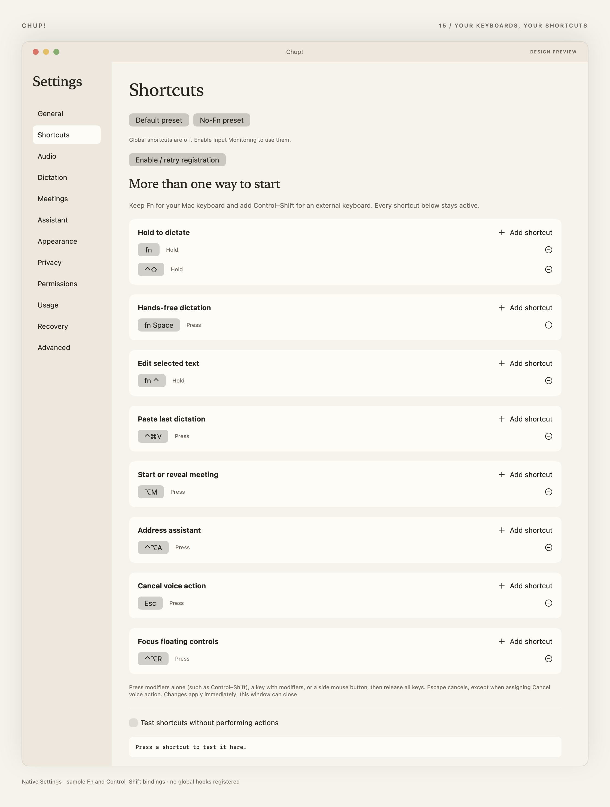
Keep several shortcuts active for each action. This labeled design sample registers no global shortcuts.
A little setup. Your choices.
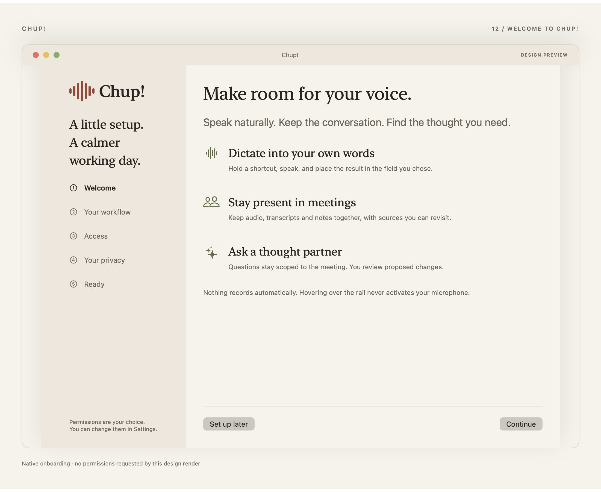
Choose your workflow, enable permissions deliberately, and keep control of cloud processing and launch at login.
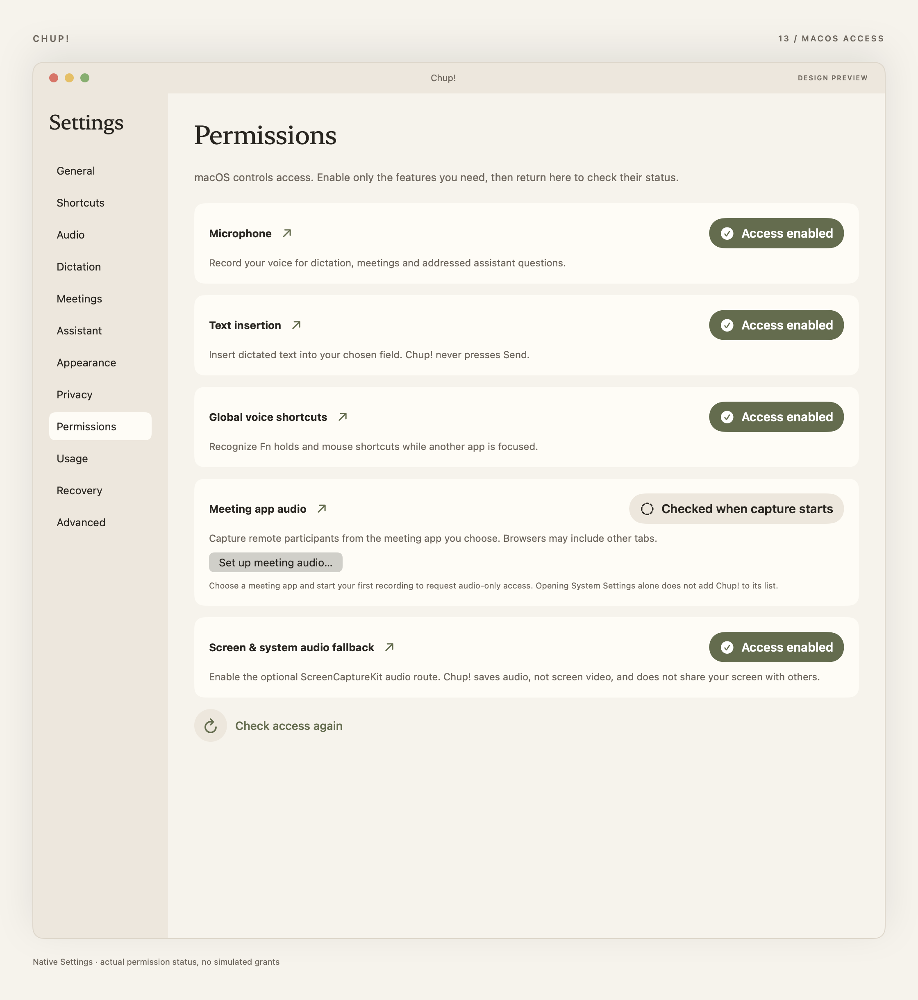
Your words, under your control.
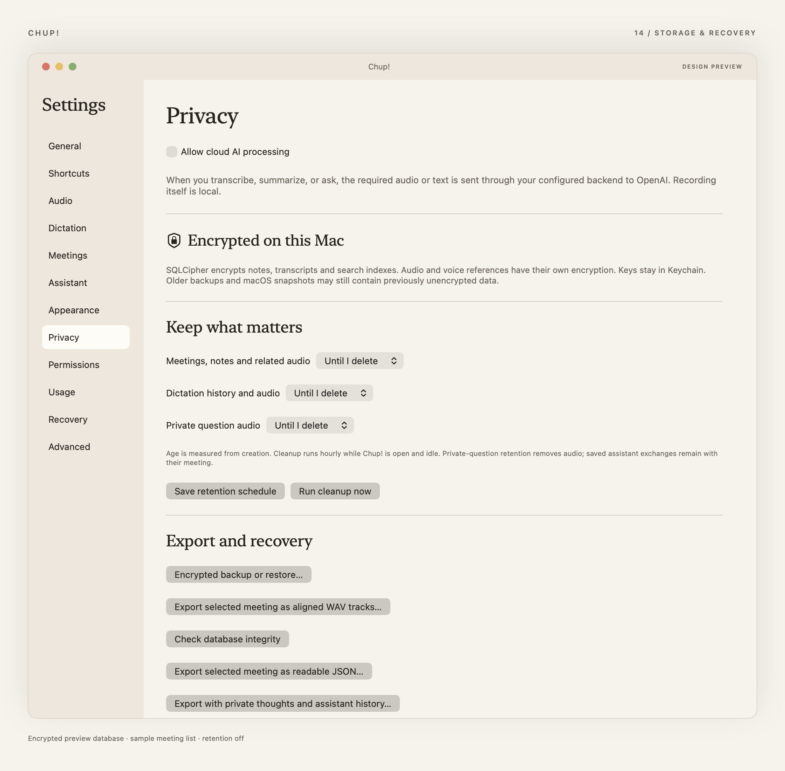
Meetings, without the dashboard clutter.
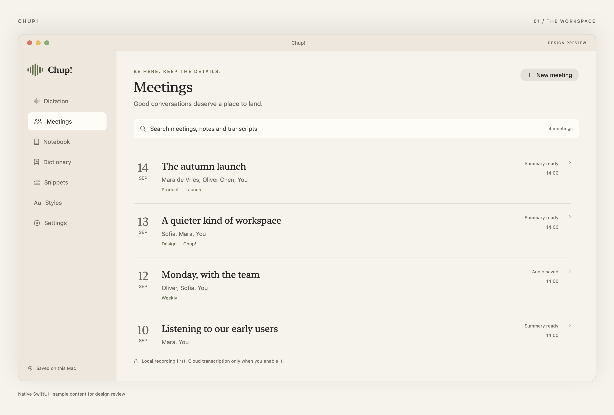
Space to scan names, dates, and context. A normal sidebar inside the window; an independent hover rail outside it.
The conversation, and what came from it.
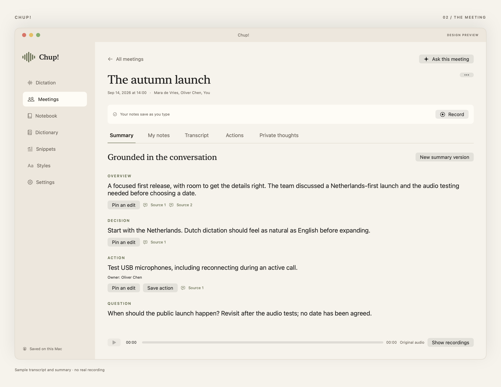
My notes remain separate from generated summaries. Sources connect a claim to the transcript and its recorded interval.
Small moments. Thoughtfully handled.
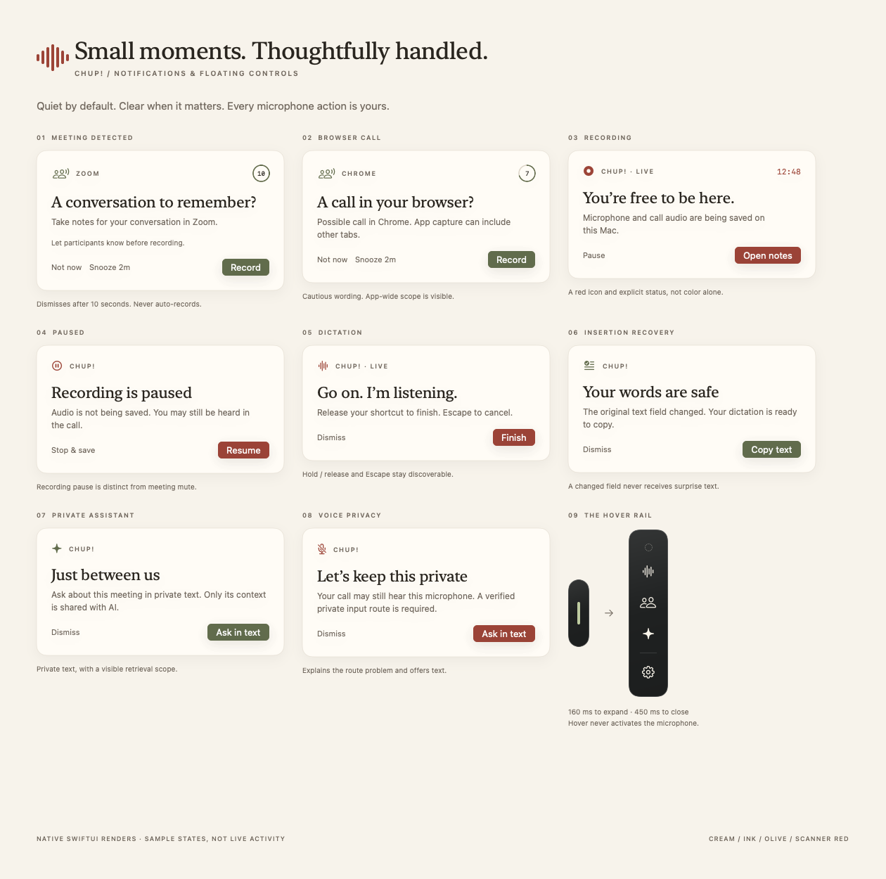
The meeting prompt dismisses after ten seconds. It never starts recording on timeout. Recording and error states use text and icons alongside color.
Only what you need, at the edge.
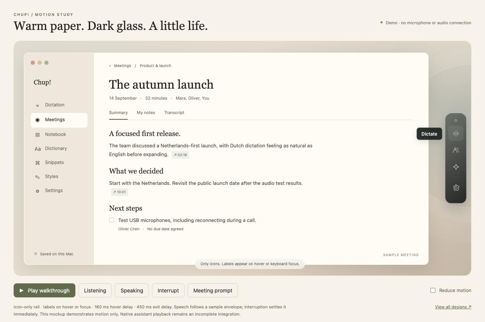
Four icons. Labels appear beside the icon on hover or keyboard focus. Labels do not intercept clicks.
A conversation you can come back to.
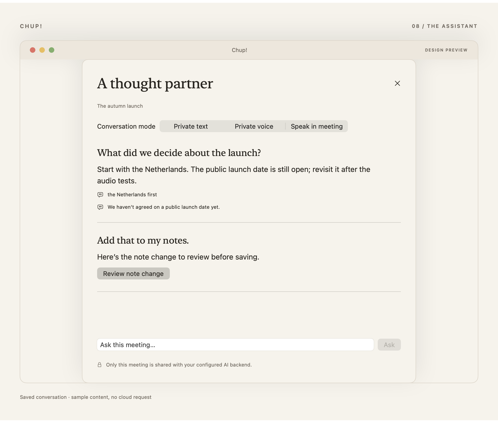
Every voice, with room for correction.
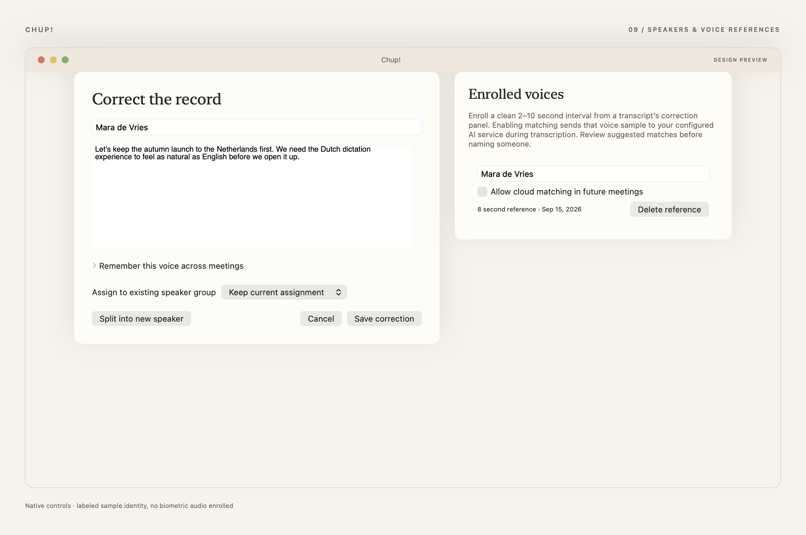
Correct words and assignments. Enroll a voice deliberately, then enable cloud matching separately. Sample identity only.
From a conversation to a clear next step.
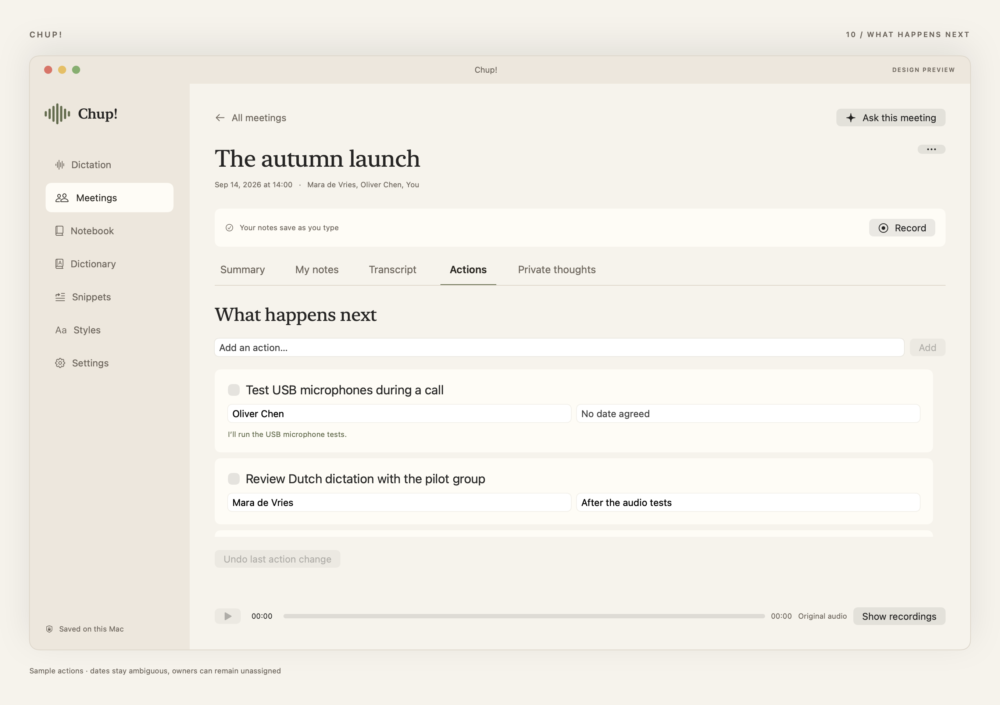
Structured actions retain their sources. Unassigned owners and uncertain dates remain visible.
A moment to think aloud.
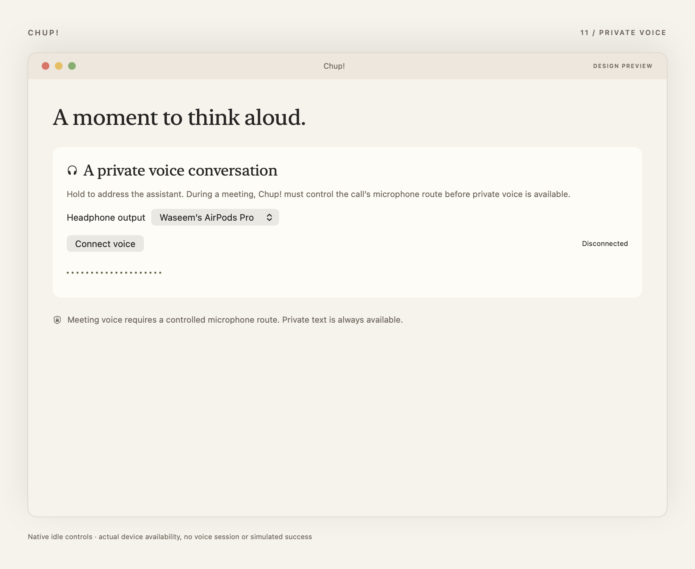
Actual device availability, no simulated voice connection. During calls, a controlled microphone route is required.
A darker edge.
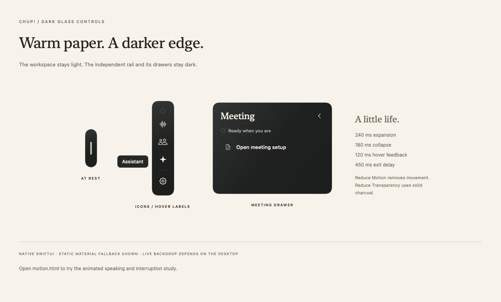
The workspace and Settings always stay light. The rail uses native dark glass, with an opaque fallback for Reduce Transparency.